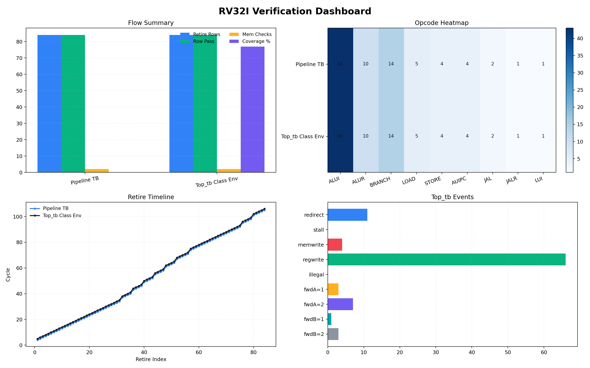
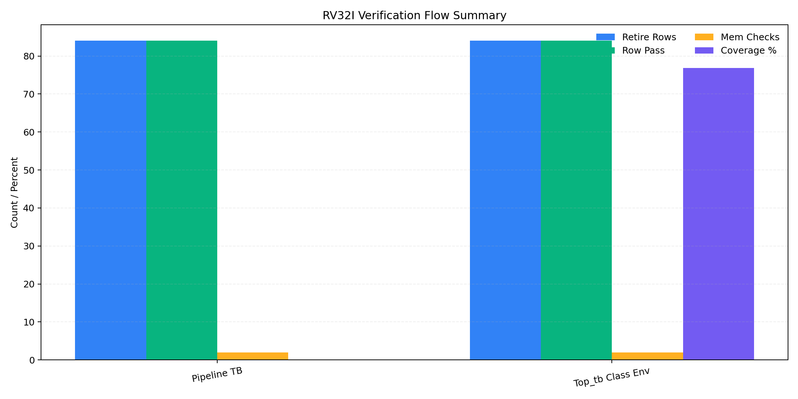
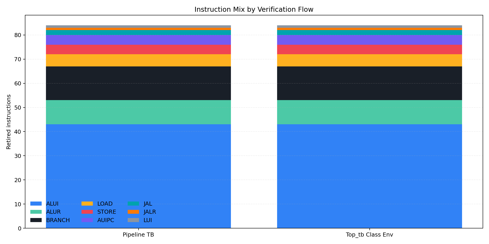
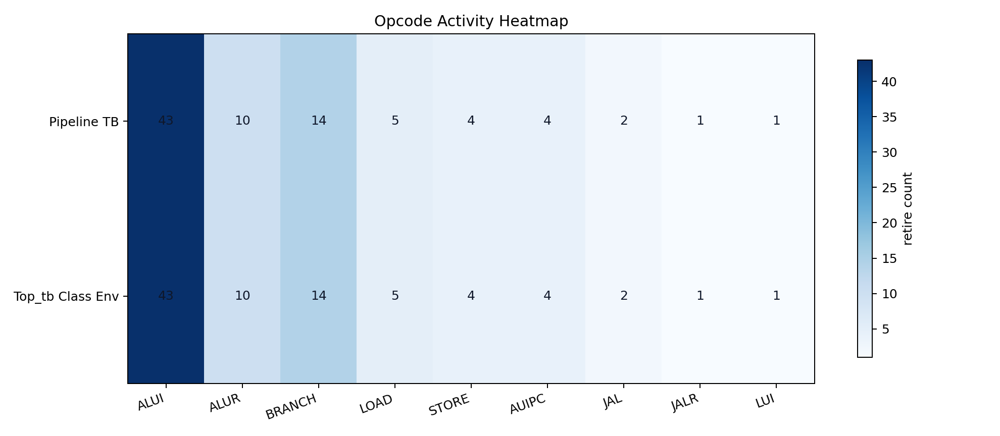
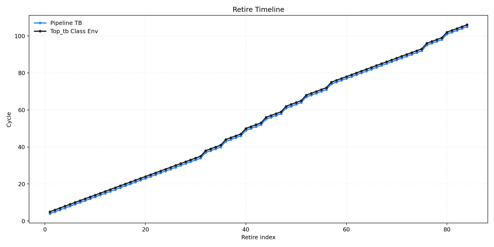
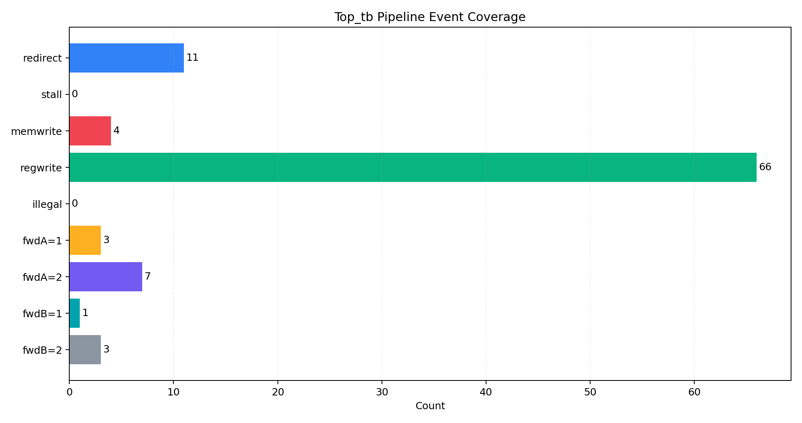

Flow 1
Pipeline TB
Procedural scoreboard flow for quick Spike alignment checks.
- Rows
- 84
- Row Pass
- 84
- Errors
- 0
- Mem Checks
- 2
- Branches
- 14
- Jumps
- 3
- Cycles
- 4->105
- Word0
- 0x00000014
- Word1
- 0xf2347f80
RV32I / Spike / XSIM / matplotlib
참고 레포 방식에 맞춰 pandas와 matplotlib로 다시 만든 검증 보고서입니다. 두 verification flow의 scoreboard PASS, retire row 정합성, 메모리 check, coverage, instruction mix, pipeline event를 한 번에 읽을 수 있도록 정리했습니다.
Flow 1
Procedural scoreboard flow for quick Spike alignment checks.
Flow 2
Passive class-based environment with monitor, scoreboard, and coverage.
한 화면에서 flow summary, opcode heatmap, retire timeline, Top_tb events를 함께 보여줍니다.

Retire rows, row pass, mem checks, coverage를 비교합니다.

두 flow의 retired instruction mix를 stacked bar로 비교합니다.

flow별 opcode activity를 heatmap으로 보여줍니다.

retire index 대비 cycle 흐름을 line chart로 비교합니다.

redirect, stall, forwarding, memwrite 관측 횟수를 정리합니다.
